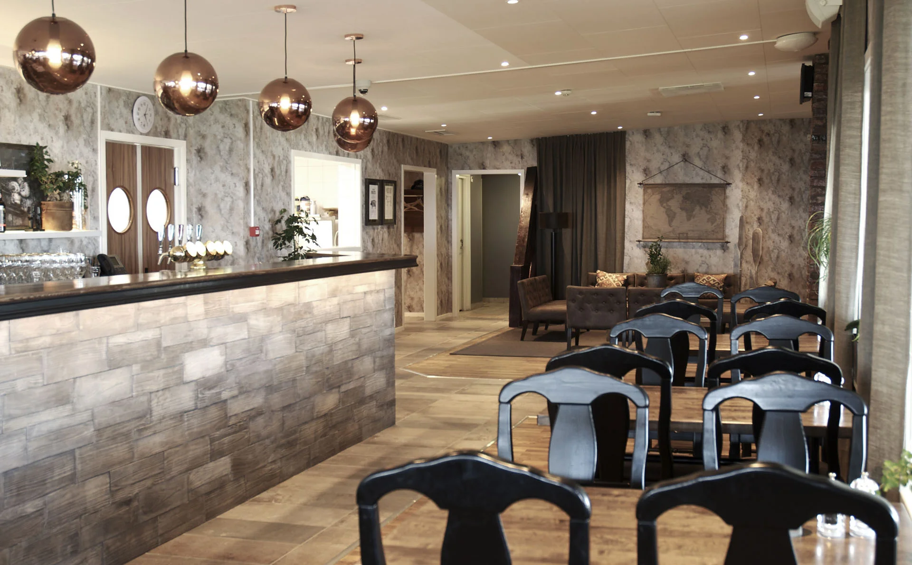
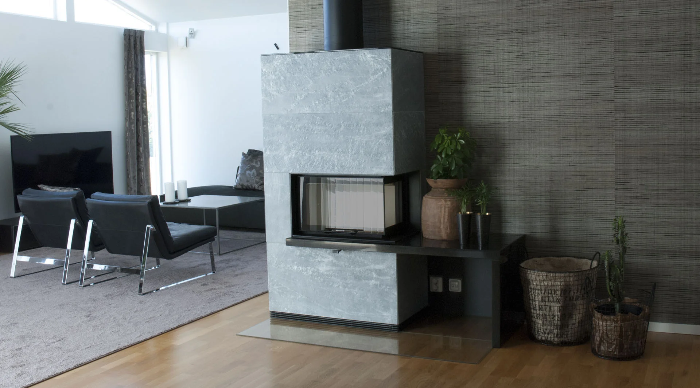

Hotell
Hela koncept eller utveckling av delar som lobby och restaurang, med sammanhållen känsla från golv till tak.
Personliga miljöer för människor, verksamheter och varumärken. Från en avgränsad förändring till ett helt inredningskoncept.
Prata med Patricia
ISELA arbetar med restauranger, hotell, kontor, butiker, gallerior, event och privata hem. Varje uppdrag anpassas till behov, tidsplan och budget.
Patricia kan hålla ihop koncept, material, möbler, belysning och specialritade lösningar samt samordna leverantörer och hantverkare genom genomförandet.
Inredningskoncept som utgår från verksamhetens varumärke, målgrupp, behov och önskade upplevelse.
Hela koncept eller utveckling av delar som lobby och restaurang, med sammanhållen känsla från golv till tak.
Mat, dryck, plats och målgrupp blir utgångspunkter för material, färger, möbler, textilier och belysning.
Tema och atmosfär utvecklas till en avkopplande miljö. ISELA kan hålla ihop design, projektledning och genomförande.
Funktionella och flexibla mötesrum som tar hänsyn till olika behov och arbetssätt.
Företagets identitet uttrycks i en inspirerande och funktionell arbetsmiljö.
Koncept, trendanalys och kunskap om målgruppen formar miljöer med tydlig karaktär.
Utbud, material, färg och inredning sammanförs till en helhet som gästen känner igen sig i.
Helhetskoncept med färg, belysning, flöden och funktion som knyter samman butiksmiljöerna.

Hem som utgår från personlighet, behov och det liv som ska levas där. Hjälp vid nybyggnad, förändring eller den sista detaljen som knyter ihop helheten.
Stil, material, ytor, textilier, möbler och ljus planeras tillsammans. ISELA kan samordna hantverkare och leveranser.
Berätta om ditt hemBildurval ur ISELAs portfolio. Scenbilder: fotografer som anges i originalmaterialet är Hidvi, Sonja Hesslow och Jonas Krantz. Bildmaterialets befintliga fotografmärkningar är bevarade.